Images of the Russian Empire: Colorizing the Prokudin-Gorskii Photo Collection
Aligning three glass plate exposures into one colour photo.
1. Approach
Prokudin-Gorskii took colour photos of the Russian Empire around 1907-1915 (before colour film existed) by taking three exposures of the same scene one after another, through a blue, a green and a red filter. The Library of Congress scanned each glass plate as one tall grayscale image with the three exposures stacked top to bottom in B, G, R order. To get the colour photo back, I cut the scan into thirds, shift the G and R thirds so they line up with the B third, and then stack them as R, G, B.


Main idea: fix a centre box on the reference image (the B channel), then read the same-sized box from the moving image (G or R) at different offsets within a window (the range of shift amounts to try), to see which offset gives the best score. There are two ways I score a pair of boxes. SSD is the L2 distance (the square root of the sum of squared pixel differences), so 0 means identical and lower is better. NCC subtracts each box's mean and scales each to unit length, then takes the dot product, so 1 means identical and higher is better. I use NCC by default since subtracting the mean means it does not care if one channel is brighter overall than another (B is noticeably brighter than R on church, which you can see in the raw scan).
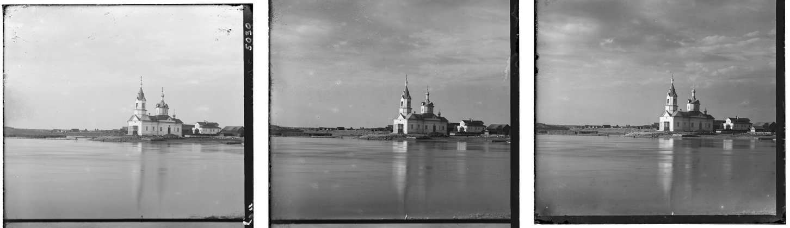
When the moving image's box is read at an offset of up to +/-15 px, the margin round it has to be at least 15 px or the box runs off the edge of the image. And 0.15 is the smallest fraction that lets the +/-15 search fit at the coarsest level, and it covers the frame with room to spare everywhere else. This is why I use fraction=0.15 for cropping borders.
And then based on the best shift amount, I shift the entire raw R and G channels onto B
with np.roll and stack them into a colour image. np.roll wraps
the pushed-off edge round to the other side (which shows up as a coloured band), so I trim
off the largest shift per side from the final image.
2. Single-scale alignment
For the small JPEGs, I just try every (dx, dy) shift in a +/-15 window and keep the one with the best score. Both metrics give the same answer on all three plates.
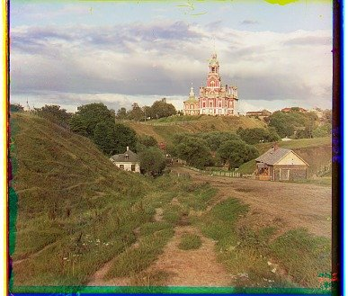
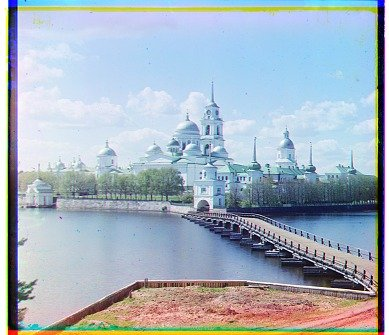

| plate | NCC G | NCC R | SSD G | SSD R |
|---|---|---|---|---|
| cathedral | (2, 5) | (3, 12) | (2, 5) | (3, 12) |
| monastery | (2, -3) | (2, 3) | (2, -3) | (2, 3) |
| tobolsk | (3, 3) | (3, 6) | (3, 3) | (3, 6) |
3. Multi-scale pyramid
The full-size .tif plates are about ten times bigger than the JPEGs and so are their
shifts, so trying every shift in a window wide enough to reach them would take hours per
image. For these I use a pyramid search: first downscale both images by half (with
skimage.transform.rescale, anti-aliasing on so the small image still looks
like the big one) until the short side is 200 px or less, and align at that smaller scale
with the +/-15 search (coarse). Then going back up, since the images were downscaled by
2, the shift amount is doubled to get the shift at the next scale, and I only search
+/-2 round it to fix the rounding (fine). A full-size plate takes under ten seconds this
way, and on the three JPEGs the pyramid gives exactly the same answer as single-scale.
With NCC on raw pixels, 13 of the 14 provided plates align correctly. The one that fails is the emir (see the last two sections). SSD also gets church wrong (R (270, 64)), so I go with NCC.
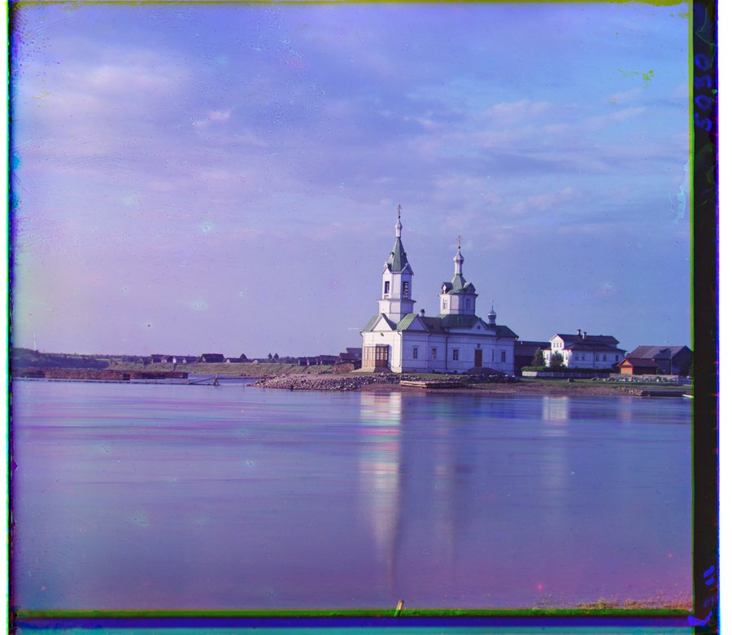
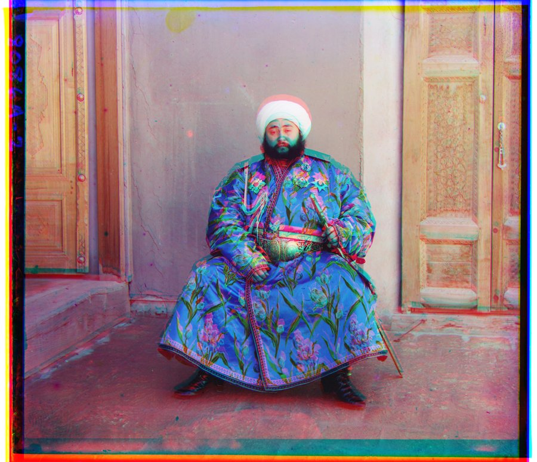
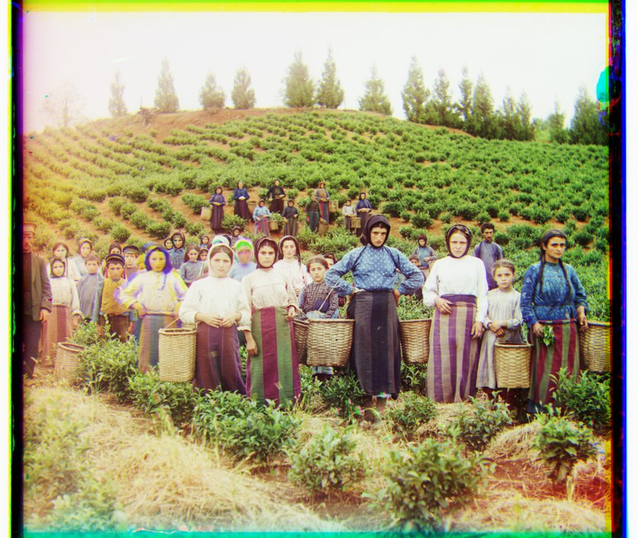
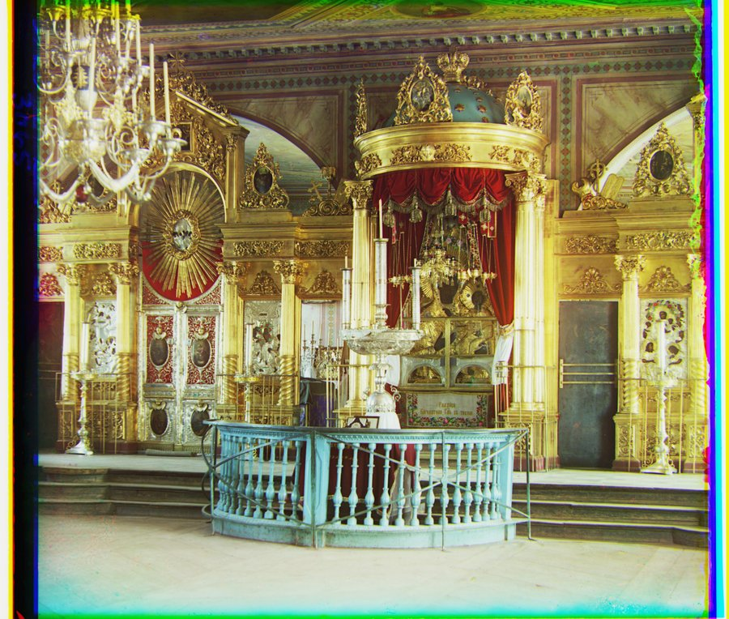
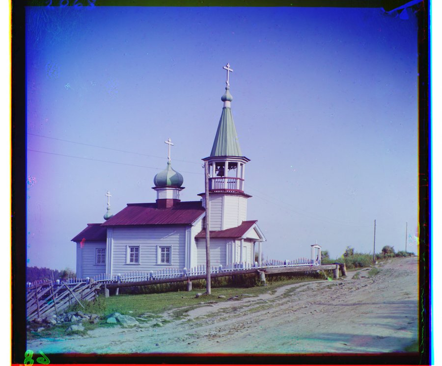
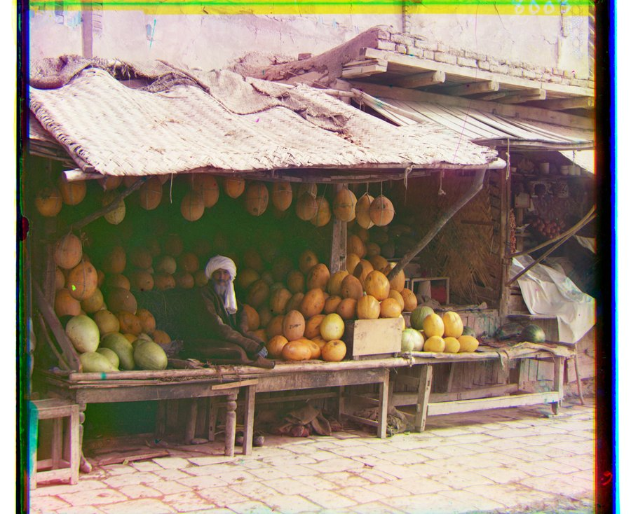

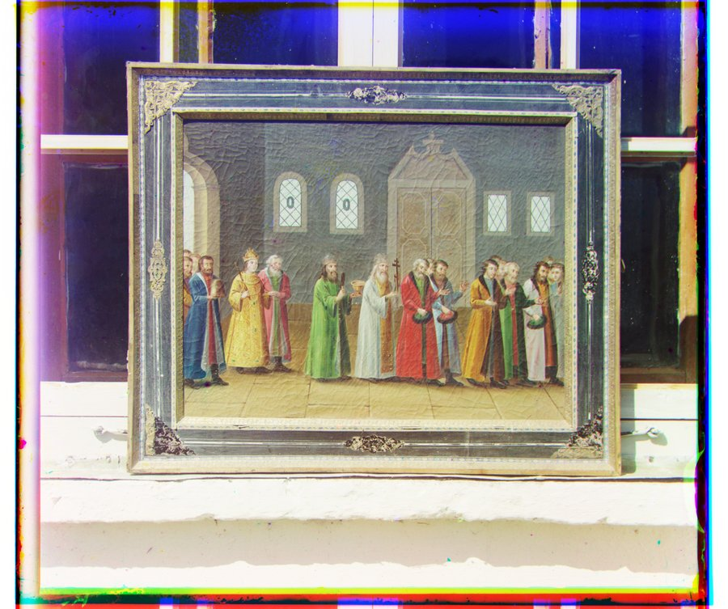
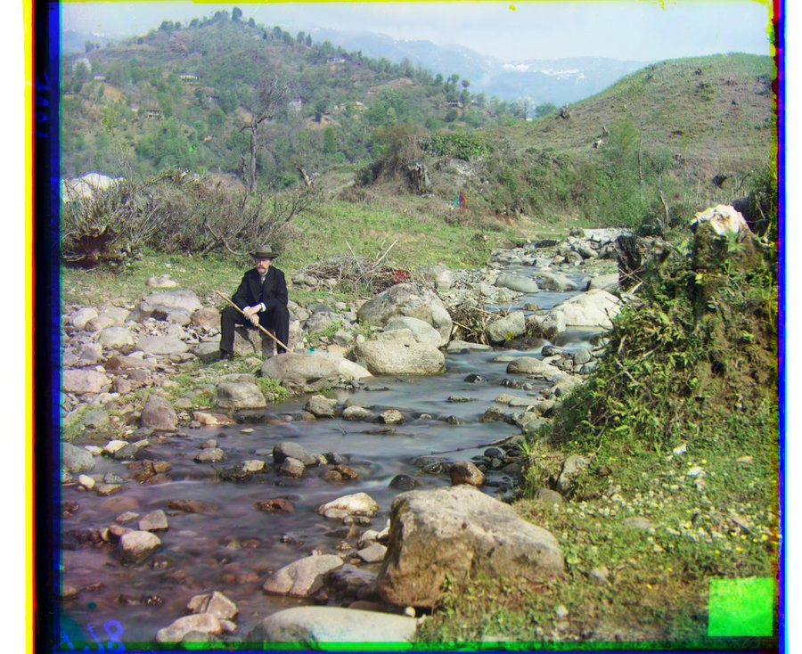
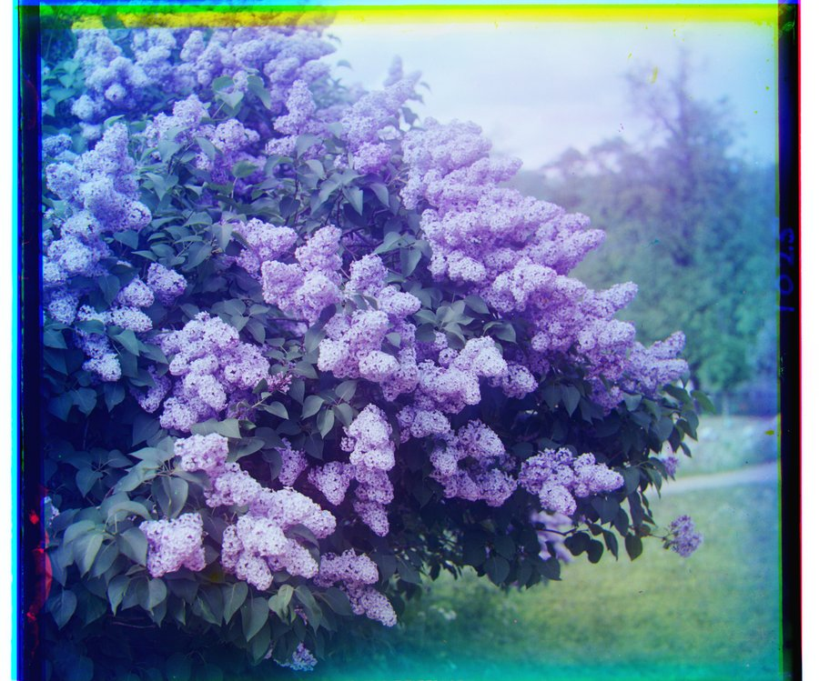
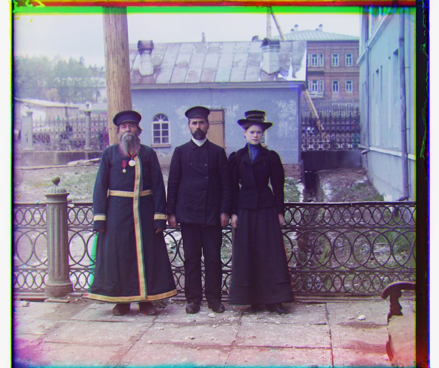
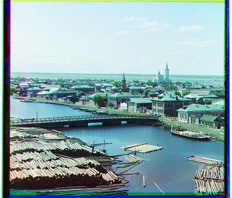
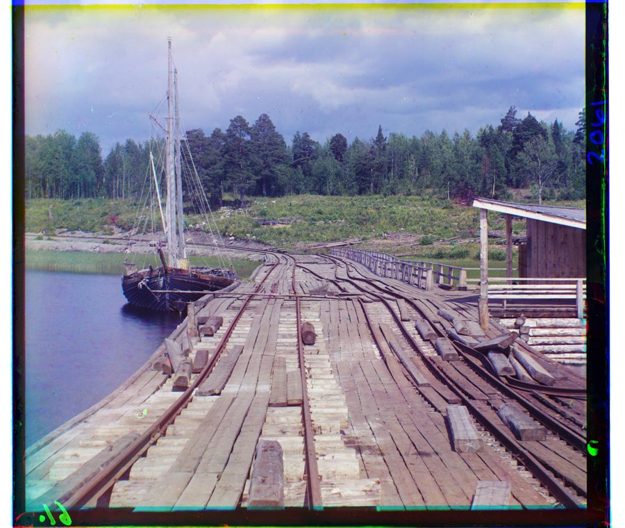
| plate | NCC G | NCC R | SSD G | SSD R |
|---|---|---|---|---|
| cathedral | (2, 5) | (3, 12) | (2, 5) | (3, 12) |
| church | (4, 25) | (-4, 58) | (4, 25) | (270, 64) |
| emir | (24, 49) | (44, 64) | (24, 49) | (44, 66) |
| harvesters | (17, 60) | (14, 124) | (17, 59) | (13, 124) |
| icon | (17, 41) | (23, 89) | (17, 41) | (23, 89) |
| ilemselga | (7, 40) | (11, 130) | (7, 40) | (11, 130) |
| melons | (10, 81) | (14, 178) | (10, 81) | (14, 178) |
| monastery | (2, -3) | (2, 3) | (2, -3) | (2, 3) |
| religous_painting | (3, 28) | (7, 68) | (3, 28) | (7, 69) |
| self_portrait | (29, 79) | (37, 176) | (29, 78) | (37, 176) |
| siren | (-6, 49) | (-25, 96) | (-6, 50) | (-25, 96) |
| three_generations | (14, 52) | (11, 111) | (14, 52) | (11, 111) |
| tobolsk | (3, 3) | (3, 6) | (3, 3) | (3, 6) |
| wharf | (-7, 15) | (-16, 82) | (-7, 15) | (-16, 82) |
4. Images of my own choosing
I downloaded four more plates from the Library of Congress collection: a peony bush (flowers), an embroidered robe laid out on a carpet (outfits), a rock outcrop (rock) and trees against a sunset (trees_sunset). All four align fine with the same settings, and the pyramid gives the same answer as single-scale for every one.
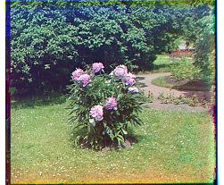
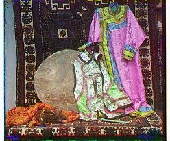
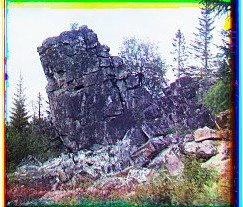
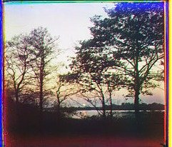
| plate | NCC G | NCC R | SSD G | SSD R |
|---|---|---|---|---|
| flowers | (0, 3) | (0, 6) | (0, 3) | (0, 6) |
| outfits | (-1, 1) | (-2, 7) | (-1, 1) | (-2, 7) |
| rock | (2, 2) | (4, 6) | (2, 2) | (4, 6) |
| trees_sunset | (-3, 5) | (-4, 7) | (-3, 5) | (-4, 7) |
5. Bells & Whistles: better features
The emir's robe is bright blue, so it shows up bright in the B exposure but nearly black
in R. That means the raw pixel values of R and B do not match even at the correct shift,
and NCC picks a wrong answer, R (44, 64) instead of (40, 107). Edges do not have this
problem since the outline of the robe is in the same place whether the robe is bright or
dark. So instead of raw pixels, I run the same pyramid search on each channel's Sobel
gradient magnitude (skimage.filters.sobel). Sobel is a [1, 2, 1] smoothing
in one direction times a [-1, 0, 1] difference in the other, so it picks out edges
without amplifying noise like a plain difference would. The shift found on the edges is
still applied to the raw pixels, so only the search part changes.
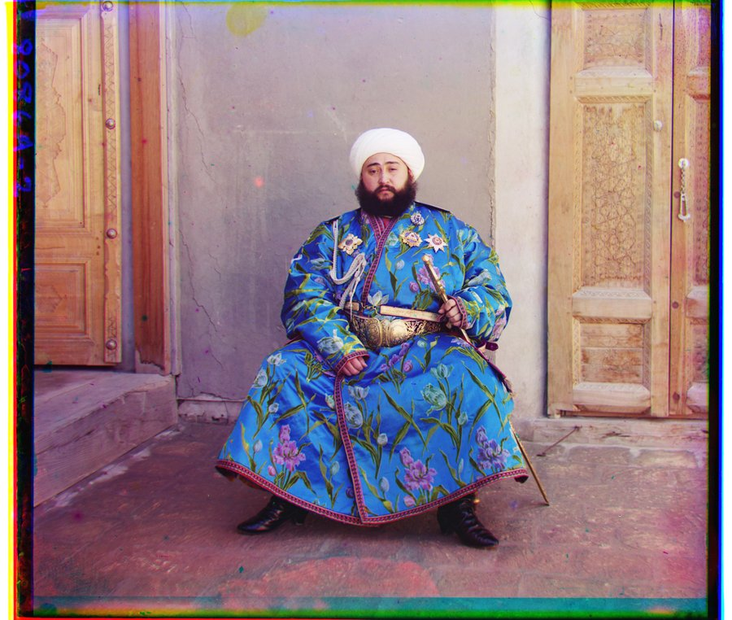
This fixes the emir and does not break anything else: on all 17 other plates the edge result is within 2 px of the pixel result. With edges, all 18 of 18 plates align.
| plate | R, raw pixels | R, sobel edges | difference |
|---|---|---|---|
| cathedral | (3, 12) | (3, 12) | 0 px |
| church | (-4, 58) | (-4, 58) | 0 px |
| emir | (44, 64) | (40, 107) | 43 px (fixed) |
| harvesters | (14, 124) | (14, 124) | 0 px |
| icon | (23, 89) | (23, 90) | 1 px |
| ilemselga | (11, 130) | (11, 131) | 1 px |
| melons | (14, 178) | (13, 177) | 1 px |
| monastery | (2, 3) | (2, 3) | 0 px |
| religous_painting | (7, 68) | (6, 70) | 2 px |
| self_portrait | (37, 176) | (37, 176) | 0 px |
| siren | (-25, 96) | (-24, 96) | 1 px |
| three_generations | (11, 111) | (9, 111) | 2 px |
| tobolsk | (3, 6) | (3, 6) | 0 px |
| wharf | (-16, 82) | (-16, 82) | 0 px |
| flowers | (0, 6) | (0, 6) | 0 px |
| outfits | (-2, 7) | (-2, 7) | 0 px |
| rock | (4, 6) | (4, 6) | 0 px |
| trees_sunset | (-4, 7) | (-4, 7) | 0 px |
6. Failure cases
With the required baseline (pyramid, NCC on raw pixels), 1 of the 18 plates fails, which is the emir (for the reason in the section above). With SSD, 2 fail since church's R channel also goes wrong. With the Sobel edges from Section 5, 0 of 18 fail.